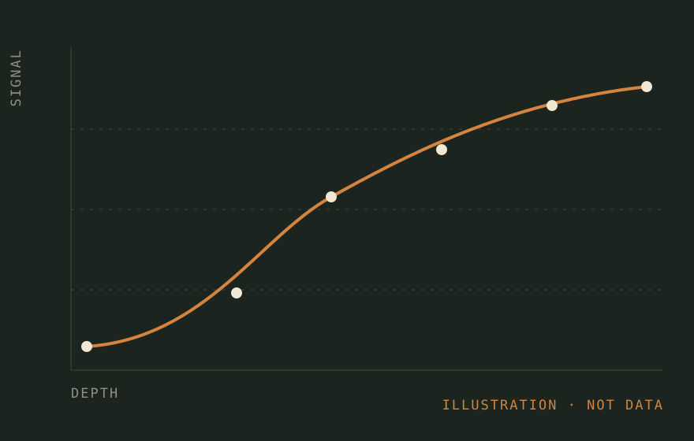

talk-harness
A talk built with talk-harness
Eight slides that show every layout, and the rules the build enforces.
Your name · Your lab · Date
02 / 07
What the build enforces
One script assembles the deck. These are the things it will not let pass quietly.
every build
- Slide numbers come from the order in the file.
- Every placeholder is listed, by slide.
- The talk time is summed from the outline.
- Speaker notes come from the outline, not the slide.
the build fails
- A raw double quote inside a speaker note.
- A figure name that viz.js does not define.
- A slide with no entry in the outline.
the stage is 1920 × 1080 and never reflowszarazhangrui/frontend-slides (MIT)
03 / 07
A schematic, and it says so
Each point is one measurement. Close together means similar. The labels arrive in the order you would say them.
Schematic: the points are made up. A figure that is an illustration says so on its own face.
04 / 07
The outline holds five fields for each slide.
One heading per slide in outline.md, and up to five lines under it.
| field | what it holds | example |
|---|---|---|
| Time | How long the slide takes. The build sums these. | Time: 1:30 |
| Notes | What is said. Lands in the notes panel (press N). | Notes: Say the title. Pause. |
| Source | Where every fact on the slide comes from, or TODO[value]. | Source: results/table3.csv |
| Visual | What is on screen, in one line. For the author. | Visual: one number, its source |
| Beat | The one thing the room takes from the slide. | Beat: a number alone is a claim |
Spanish field names (Tiempo, Notas, Fuente) are accepted too
05 / 07
the stage
1920 × 1080
The whole stage scales to the screen as one unit. Nothing reflows, on a phone or a projector.
Source: _src/viewport-base.css, section 3. A number with a file is a fact; a number alone is a claim.
one number per slide, and where it came fromzarazhangrui/frontend-slides (MIT)
06 / 07
A figure from a file

Media comes from assets/ through a token in the slide.
- Linked by default, so the folder ships with the file.
- --embed-media inlines it for one portable file.
- A missing file is listed on every build.
assets/example-figure.svg, an illustration drawn for this deckChrome headless mode, developer docs
07 / 07
Every source, and the slide it is on.
Everything the deck cited, with the slide it appears on. The build writes this list.
zarazhangrui/frontend-slides (MIT)slide 2, 5https://github.com/zarazhangrui/frontend-slides
Chrome headless mode, developer docsslide 6https://developer.chrome.com/docs/chromium/headless
sources/citations.json
Backup
Keys
| ← → space | previous, next |
| #12 in the URL | open on slide 12 |
| N | speaker notes. Off before you share a screen. |
| E, then Ctrl+S | edit text in place, download the edited file |
| F | fullscreen |
| ?t=6 | freeze every figure at second 6 (stills, PDF) |
a backup slide: unnumbered, and not counted in the time